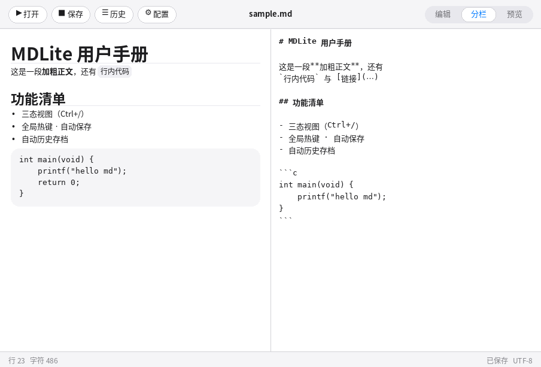
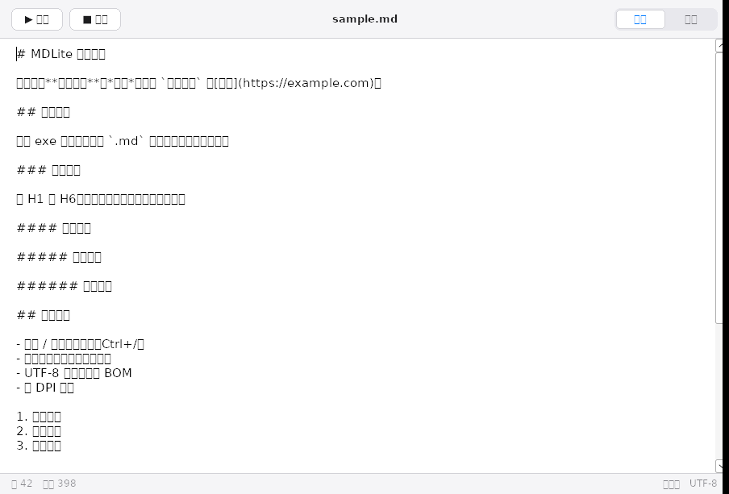
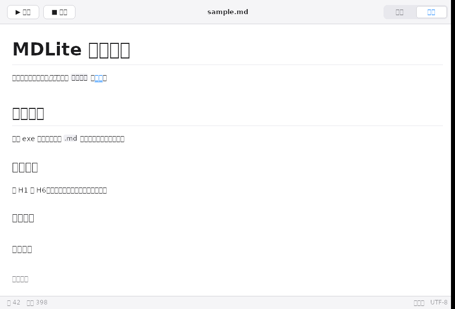

MDLite
极简 Markdown 编辑 / 查看器，单文件、零依赖
体积 95 KB
内存 ~3 MB
单 exe · 无运行库
Windows 10/11 · 64 位
下载 MDLite.exe
95 KB · 下载后直接运行，无需安装

分栏模式 — 左渲染右源码，打字实时刷新

编辑模式 — 等宽字体、行数与字符统计

预览模式 — 内置渲染引擎，无浏览器内核
功能
- 三态视图：编辑 / 分栏 / 预览
- 分栏实时刷新（300ms 防抖）
- 标题 H1–H6，字号层级清晰递进
- 粗体、斜体、行内代码、删除线
- 链接、引用、分隔线
- 有序 / 无序列表、嵌套缩进
- 代码块（灰底圆角、Tab 展开）
- 自动换行、超长串硬折行
- UTF-8 读写（兼容 BOM）
- 拖拽 .md 文件到窗口打开
- 命令行传参：MDLite.exe note.md
- 自动历史存档，一键恢复
- 内置极简 git 引擎，真 git 仓库
- Ctrl+F 查找，计数跳转
- Ctrl+滚轮 五档缩放
- 可配置全局热键（默认 Ctrl+Shift+Space）
- 可配置自动保存（10/30/60 秒）
- 记住窗口位置与缩放比例
- 高 DPI 感知（Per-Monitor V2）
- 历史面板自绘：10 行 + 滚动条，本地时区显示
- 自动存档覆盖去重：连续 auto save 只保留最近 1 条
- 恢复后防误存档：已归档内容相同不再重复提交
- 配置按钮 + AI 设置对话框：Base URL / 模型 / Key / 超时
- 托盘常驻：关窗仅隐藏，托盘右键退出才真正关闭
- /命令后台执行：不锁编辑区，答案插入问题正下方
- //命令调用 opencode Agent（可配路径与提示词）
- AI / Agent 回答首尾自动加
--- 分隔线，可手动删除
- /命令流式 AI：编辑器行首输入 / 后按 Enter 触发
- Esc 中断 AI 生成并关闭对话框
快捷键
| 按键 | 功能 |
|---|
| Ctrl + N / O / S | 新建 / 打开 / 保存 |
| Ctrl + Shift + S | 另存为 |
| Ctrl + / | 循环切换 编辑 / 分栏 / 预览 |
| Ctrl + F | 查找（Enter 下一个，Shift+Enter 上一个） |
| Ctrl + , | 设置（热键 / 自动保存间隔） |
| Ctrl + Shift + Space | 全局热键：呼出 / 隐藏窗口 |
| 行首 / + Enter | AI 问答后台流式插入（可 Esc 中断） |
| 行首 // + Enter | 提交 opencode Agent 后台执行（可 Esc 中断） |
| Ctrl + Shift + Space | 全局热键：呼出 / 隐藏窗口（默认，可改键） |
| Ctrl + 滚轮 | 缩放 85% – 150%，共五档 |
| Tab | 插入 4 空格缩进 |
| Esc | 关闭查找 / 预览模式返回编辑 |
历史版本 = 内置 git 时间机
文件夹里只保留一份工作文件。每次保存自动在
.mdlite-git
写入一个真正的 git 提交：相同内容自动去重、内容增量存储、完整时间线。
点击工具栏「历史」即可浏览各保存点并一键恢复，主文件路径保持不变。
仓库是标准 git 格式——用 git --git-dir=.mdlite-git log
随时查看完整历史。自动保存触发时同样入库存档。
为什么它这么小、这么省内存
MDLite 用纯 C 和 Win32 原生 API 编写，界面与 Markdown 渲染全部使用 GDI 直绘，
编辑器复用系统原生 EDIT 控件，SHA-1 用系统 CryptAPI，git 对象用零依赖 zlib stored 编码。
整个程序只链接 Windows 系统 DLL，没有浏览器内核、没有 Electron、没有 .NET 运行时，
因此体积只有 95 KB（含应用图标、git 引擎、AI 流式与 Agent 模块），空文档内存占用约 2–3 MB。